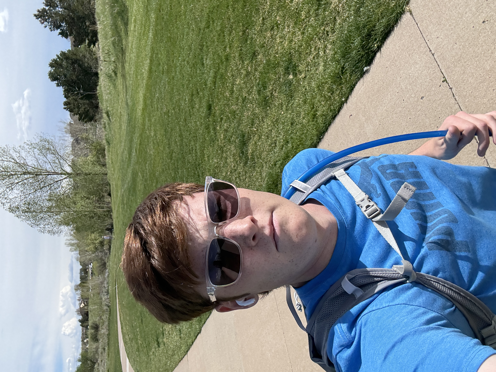
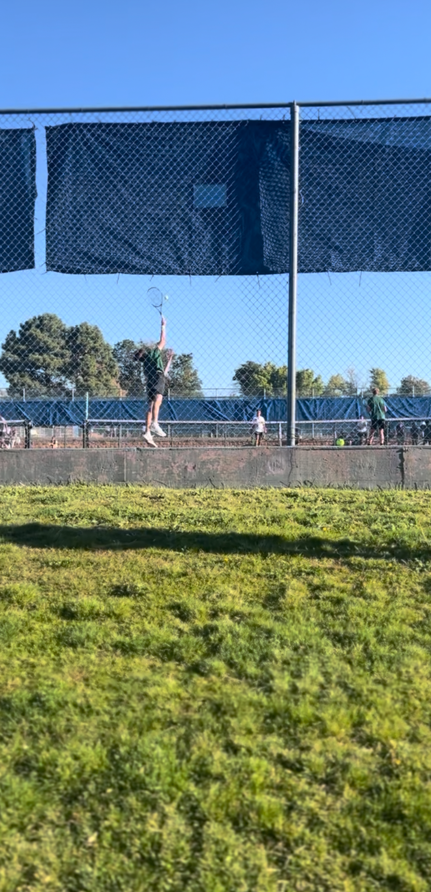

Matthew's Passions
Physical-related activities that I am passionte about
are tennis, running, and the local gyms at the reccenters,
setting new standards for myself
mentally along the way.

I'm not good at serving. But ground strokes, vollys, lobs,
and everything else I'm pretty good at. Reached JV Number 1
two years in a row, and it was so fun to play.

I am a writer, through and through, at heart. Likely my favorite thing to,
in-and-outside of my academics and future career, is writing stories that
not only I enjoy, but also the people around me do. I'm currently working
on my A Trail of Wanderers' three-book series, which I hope to have published
one day as a New York Times Bestselling Series. Here are some quotes from my
stories that you might find fun.

THE PLOT OF A TRAIL OF WANDERERS'
is centered around the main character Nue, an
elf with a scattered memory, who doesn't realize who he is until a creature known as
a Fenk comes to tell him of his amnesia. Enlightened, and curious of his past, he ventures
to the Fenk islands with his party that grows, with a devastating enemy known as the Shepherd
that chases Nue, with an intuition as sharp as a nail's tip, knowing something is wrong with the elf....
That is the VERY basic plot, I promise it's more nuanced than that. Please email me at matthewrstangeland@gmail.com if you want the manuscript
to read it!
PROLOGUE A.T.O.W. - first paragraph
It was dark before the Fenk would get his audience.
The Sheep of the Mherd howled with deep prayer in their huts, which made him uneasy. He tried to break free of the bloodstained steel chains, but the grip was too strong. He was surprised that the set fit his small, dirtied hands.
How had the Shepherd anticipated his charade?
It began with the Great Roaring.
At this time most of what was was mud and dirt and people running.
They didn’t talk to me. I don’t think they wanted to.
They were always getting thrown around and stepped on and piled up in holes and being hit by things.
This happened for a while.
--- The Weed's World (Written in April 2025)
It was a sunny day deep in the Jungle.
Only a few birds piped and whistled. And yet a very cute 6 year old boy yet who looked lost in this vivid Jungle.
He walked for hours it seemed. And yet it is now night. And the boy is lost.
--- The Monks (The first story I ever wrote - November 2017)